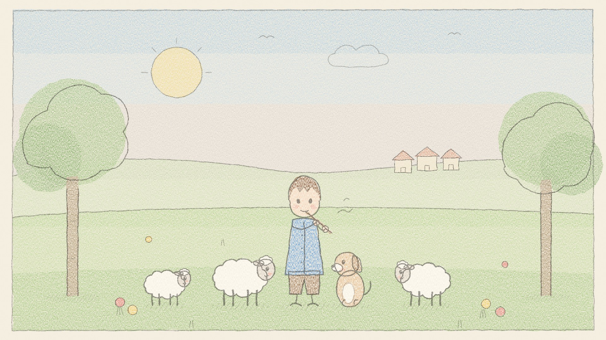

The Boy Who Cried Wolf: Bedtime Story for Kids, Our Retelling (after Aesop)
The Boy Who Cried Wolf, Aesop's fable, retold in our own words as a gentle bedtime story, from The Aesop for Children. A bored shepherd boy cries wolf for fun, until a real wolf comes and nobody believes him. In this episode: - A bored shepherd boy and a silly trick - A real wolf, and nobody comes - Saying sorry, and finding every sheep Sources: The Shepherd Boy & the Wolf, Aesop, The Aesop for Children (Library of Congress) Music: Kevin MacLeod (incompetech.com), CC BY 4.0 Gentle stories for bedtime and story time, told slowly by a warm narrator. luongnv.com/podcast/stories
Listen on Once Upon a Time Show Download MP3 Transcript
Also in: Français, Tiếng Việt
Based on The Shepherd Boy & the Wolf by Aesop
Transcript
Narrator: Welcome to Once Upon a Time Show. It's time for a bedtime story. Hello, little one. Snuggle down, nice and cozy. Tonight's story is a very old one. It's one of Aesop's fables, and we tell it in our own words. It's about a shepherd boy, his woolly sheep, and a word he shouted once too often. Ready? Let's begin. Once upon a time, near a little village, there was a green hill. At the bottom of the hill grew a deep, dark forest. On the hill, a shepherd boy looked after his sheep. They were soft and white, like little clouds. Baa, baa! The boy had a little dog and a wooden pipe. But the days were long, and the boy was bored. So bored!
The farmer had told him: if a wolf ever comes, shout loud. Then the village will come to help. One sunny morning, the boy had an idea. A silly idea. He ran down the hill and shouted, Wolf! Wolf! A wolf is coming! Down in the village, everyone stopped working. The baker put down his bread. And up the hill they all ran, puff, puff, puff. But there was no wolf at all. Only the sheep, munching the grass. And the boy was rolling on the ground, laughing and laughing. A few days later, he did it again. Wolf! Wolf! Again the villagers came running, and again there was no wolf. Then one evening, the sun was going down behind the forest. Long shadows crept slowly across the hill.
And out of the trees came a wolf. A real one this time, with grey fur and a bushy tail! The sheep cried baa and ran off in every direction. The boy ran to the village as fast as he could. Wolf! Wolf! he called. Please come! But this time, nobody came. He's playing his trick again, they said. The wolf couldn't catch a single sheep, because they had hidden among the trees. So it slipped quietly back into the forest. The boy sat alone on the hill, with his little dog beside him. His sheep were gone, and nobody had believed him. And he felt very sorry. The next morning, the boy went down to the village. I played a trick on you, he said quietly. I'm sorry. I'll never do it again.
The villagers saw that he meant it. Together they climbed the hill and found every sheep, safe and sound among the trees. And the boy learned something that day. When you always tell the truth, people believe you when you really need them. And now the hill is quiet. The stars come out, one by one. The sheep snuggle together, soft and warm. The little dog curls up by the gate. The boy plays one last sleepy tune. Toot, toot. Close your eyes now, little one. Breathe in, breathe out, nice and slow. Goodnight from Once Upon a Time Show. Sweet dreams.